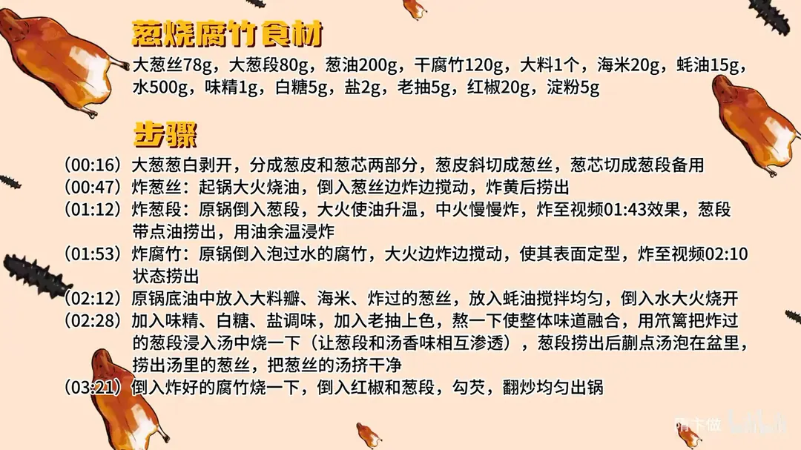

葱烧腐竹
隋卞一做。葱白分成葱皮与葱芯，葱皮切丝炸黄、葱芯切段中火慢炸；干腐竹泡发后大火炸定型，再用 200g 葱油加海米、蚝油和 500g 水熬汤，回烧收汁、勾芡裹匀。
原视频：https://www.bilibili.com/video/BV1qd2tYwE7A
食材
干腐竹、大葱、葱油 等 14 样
| 类别 | 用料 | 用量 |
|---|---|---|
| 主料 | 干腐竹 | 120g |
| 葱料 | 大葱丝（葱皮切丝） | 78g |
| 葱料 | 大葱段（葱芯） | 80g |
| 用油 | 葱油 | 200g |
| 香料 | 大料 | 1 个 |
| 提鲜 | 海米 | 20g |
| 调味 | 蚝油 | 15g |
| 汤水 | 水 | 500g |
| 调味 | 味精 | 1g |
| 调味 | 白糖 | 5g |
| 调味 | 盐 | 2g |
| 调色 | 老抽 | 5g |
| 配色 | 红椒 | 20g |
| 勾芡 | 淀粉 | 5g |
步骤
- 处理葱：大葱葱白剥开，分成葱皮和葱芯两部分，葱皮斜切成葱丝，葱芯切成葱段备用。
- 炸葱丝：起锅大火烧油，倒入 78g 葱丝边炸边搅动，炸黄后捞出。
- 炸葱段：原锅倒入 80g 葱段，大火使油升温，转中火慢慢炸，炸到葱段带点油、颜色微黄时捞出，用油的余温浸炸。
- 炸腐竹：原锅倒入泡过水的 120g 腐竹，大火边炸边搅动，使表面定型，炸到表皮起皱、略有蓬起时捞出。
- 熬汤：原锅底油中放入大料瓣、20g 海米、炸过的葱丝，放入 15g 蚝油搅拌均匀，倒入 500g 水大火烧开。
- 调味融合：加入 1g 味精、5g 白糖、2g 盐调味，加 5g 老抽上色，熬一下让整体味道融合；用笊篱把炸过的葱段浸入汤中烧一下，让葱段和汤的香味相互渗透，葱段捞出后涮点汤泡在盆里；捞出汤里的葱丝，把葱丝里的汤挤干净。
- 合烧出锅：倒入炸好的腐竹烧一下，倒入 20g 红椒和葱段，勾入淀粉水，翻炒均匀出锅。
小贴士
- 葱丝和葱段分开炸：葱丝炸黄出香，葱段只炸到微黄再用余温浸炸，才不会发苦。
- 葱段在汤里只「浸烧」一下，捞出后还要回锅，久煮会烂。
讲解要点
难度：★★☆☆☆（新手可做，难点是炸葱和炸腐竹的油温——葱丝要炸黄不糊，葱段要炸透不黑）
为什么这么做
- 葱皮切丝、葱芯切段：两部分用处不同。葱皮薄，切丝下锅炸香、用来熬葱烧汁；葱芯厚实耐炸，切段留着回锅烧，吃的是口感。
- 先用葱炸油、再用葱油煎腐竹：葱的香味全被油带走，腐竹煎的时候吸的就是葱油，成菜的葱香是从里往外透的。
- 炸葱丝要不停搅动：受热均匀才不会一部分炸糊、一部分还没出香，炸黄就捞。
- 葱段中火慢炸、油花变大就关小火：油温太高葱两头先糊（徒弟做葱烧海参就是这么糊的）；捞出时特意带点油，靠余温把葱再「紧透」。
- 腐竹泡软但别泡过头：不泡软煎不动，泡过了下锅一炸就散飞。油温稍高、把表面水分炸掉定型即可，粘在一起不用管，一烧就散开。
- 底油放海米和大料：海米提鲜，大料压豆腥、增肉香，和葱香叠成复合味。
- 葱段只在汤里浸烧一下：让葱香溶进汁里，葱再吸回一点汤汁的味道，煮久了就烂得没形。
- 最后勾芡：腐竹表面挂不住汁，勾芡后汤汁才裹得住每一根。
容易翻车
- 腐竹泡过头，下锅一炸就碎成渣。
- 炸葱火大，葱丝发黑发苦，葱段两头糊了心还没透。
- 葱段在汤里煮久了，捞出就烂，回锅也没有形。
- 勾芡一次倒太多，汁结坨、糊在锅底。
热评补充
- 有观众总结：吸汤能力强的食材都能这么做「葱烧」（比如发面饼、豆腐），靠的就是葱油和那口浓汁。
原片尾卡

原片文案
AI 字幕校准稿
我跟小李打了个赌：有时候素菜做出来比肉菜都好吃，他不信。今天带小李见见世面，让他看看什么叫专业厨师。来吧，葱烧腐竹。
大葱分成两部分，作用不一样。先把葱剥开，外边这层皮切成粗丝，斜着切，这是熬葱烧汁用的；里边的芯切成段，葱心吃着口感会更好，这个就是腐竹里边起烧的。
锅里倒上干净油，一勺是 80，三勺。大火把油烧热，先炸葱，炸的同时勺子不停地搅动，让所有的葱受热均匀。这是不是也算炸葱油了？就你机灵。用这个葱先把油炸香，再拿这个葱油来煎腐竹，那肯定香。
炸黄的葱要捞出来，大葱段再炸一下，大火升温、中火慢慢炸，给它炸透。你看这油花特别大了，就得关到中火。前两天徒弟做葱烧海参，葱两头是糊的，我说这怎么回事？就是油温高了，啥也不是。炸成这样就行了，捞出来时里边带点油，让它慢慢用余温把葱再紧透。
锅里的油把腐竹再煎一下，温度要稍微高一点，表面的水分炸掉一部分、定型就可以了。就算它粘一块也没关系，一会一烧它就开了，但是得扒拉它，让它受热均匀。煎成这样就可以了。
炸完腐竹，这点底油里边放一个大料瓣、海米，把刚才炸过的葱倒进来。炸过的葱是香，海米提个鲜味，然后加蚝油、加水，大火烧开。里边调味：味精、白糖、盐，老抽上色，熬得味道很融合了就可以了。
把炸过的葱段搁里边烧一下——不是怕葱变形，是要把它拿出来，让葱的香味跑到汁里去，再让葱吸收点汤汁的味道。我定一下味，补点糖、盐，然后把葱捞出来，汁水全都给它挤干净。这个汁现在是很宝贵的，一点都不能浪费。
把炸好的腐竹倒到汤里边稍微一烧，放两个红椒调个颜色。你看现在腐竹都变成一根是一根的了。然后把炸过的葱段也倒进去，勾芡，出锅。
有点那意思是吧，好好吃啊，那就再来一口，确实比肉做的好。先说口感：煎过以后表面有一点焦焦的，但腐竹本身软嫩的劲儿还在；炸过以后水分少了，豆制品的香味更突出，和葱香一融合，是非常复合的味道。
腐竹一定要泡一下，泡完回软，而且不能泡过——泡过了之后一炸就全飞了。它炸过以后把葱香味吸得好足，因为是用葱油炸的。你说这烧腐竹都这么好吃，那烧海参呢？行，那今天先这样吧。